2024 Advanced Higher Chemistry - Paper 2 questions
Source: Scottish Qualifications Authority (SQA) / Qualifications Scotland. This is a StemInteract HTML companion, not an official HTML edition. Selectable text is supplied alongside original page images. Use the images or original PDF for equations, powers, fractions, vector notation, tables and diagrams; text extraction cannot fully preserve mathematical layout.
Jump to a question
PDF page 1
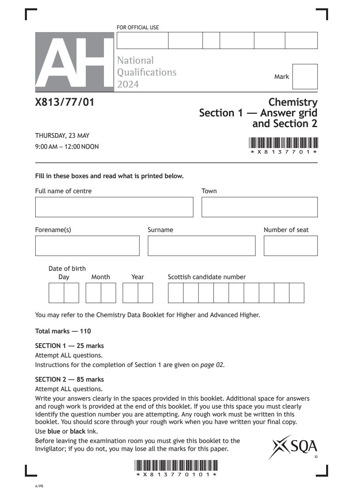
Selectable page text
FOR OFFICIAL USE
AH
National
Qualications
Mark
2024
X813/77/01 Chemistry
Section 1 — Answer grid
and Section 2
THURSDAY, 23 MAY
9:00 AM – 12:00 NOON
*X8137701*
Fill in these boxes and read what is printed below.
Full name of centre Town
Forename(s) Surname Number of seat
Date of birth
Day Month Year Scottish candidate number
You may refer to the Chemistry Data Booklet for Higher and Advanced Higher.
Total marks — 110
SECTION 1 — 25 marks
Attempt ALL questions.
Instructions for the completion of Section 1 are given on page 02.
SECTION 2 — 85 marks
Attempt ALL questions.
Write your answers clearly in the spaces provided in this booklet. Additional space for answers
and rough work is provided at the end of this booklet. If you use this space you must clearly
identify the question number you are attempting. Any rough work must be written in this
booklet. You should score through your rough work when you have written your final copy.
Use blue or black ink.
Before leaving the examination room you must give this booklet to the
Invigilator; if you do not, you may lose all the marks for this paper.
©
*X813770101*
A/PBPDF page 2

Selectable page text
SECTION 1 — 25 marks
The questions for Section 1 are contained in the question paper X813/77/02.
Read these and record your answers on the answer grid on page 03 opposite.
Use blue or black ink. Do NOT use gel pens or pencil.
1. The answer to each question is either A, B, C or D. Decide what your answer is, then fill in
the appropriate bubble (see sample question below).
2. There is only one correct answer to each question.
3. Any rough working should be done on the additional space for answers and rough work at
the end of this booklet.
Sample question
To show that the ink in a ball-pen consists of a mixture of dyes, the method of separation would
be
A fractional distillation
B chromatography
C fractional crystallisation
D filtration.
The correct answer is B — chromatography. The answer B bubble has been clearly filled in (see
below).
A B C D
Changing an answer
If you decide to change your answer, cancel your first answer by putting a cross through it (see
below) and fill in the answer you want. The answer below has been changed to D.
A B C D
If you then decide to change back to an answer you have already scored out, put a tick (✓) to the
right of the answer you want, as shown below:
A B C D A B C D
or
*X813770102*
page 02PDF page 3

Selectable page text
SECTION 1 — Answer grid
*OBJ25AD1*
A B C D
1
2
3
4
5
6
7
8
9
10
11
12
13
14
15
16
17
18
19
20
21
22
23
24
25
*X813770103*
page 03 [Turn overPDF page 4

Selectable page text
[BLANK PAGE]
DO NOT WRITE ON THIS PAGE
*X813770104*
page 04PDF page 5
Paper 2, Question 1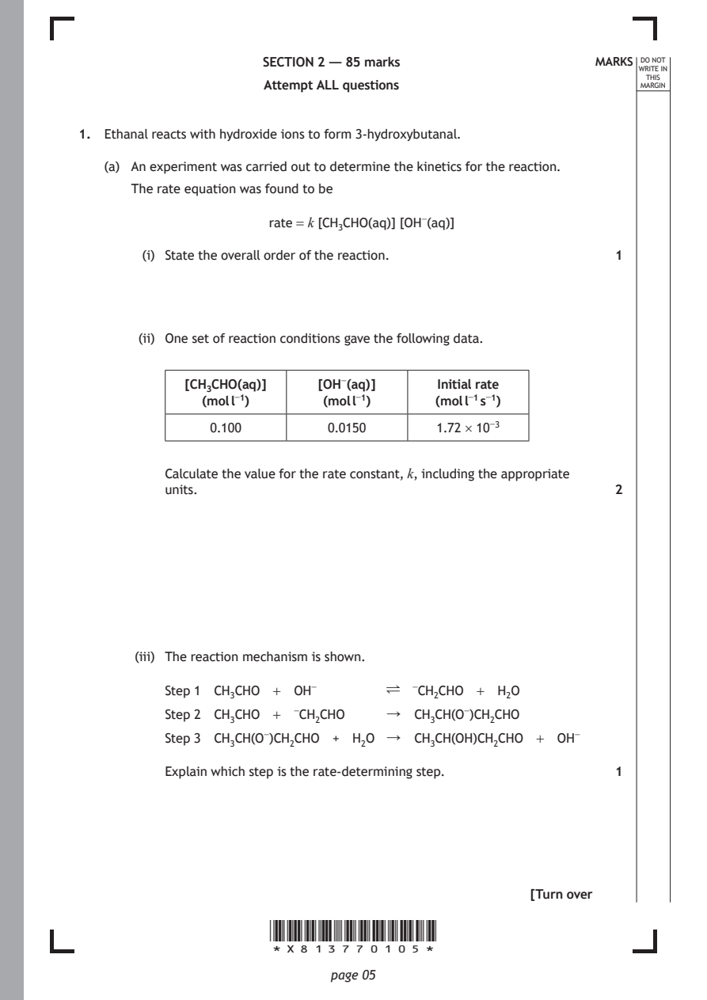
Selectable page text
SECTION 2 — 85 marks MARKS _{W}^{D}_{R}^{O}_{I} _{T}^{N}OT
E IN
THIS
Attempt ALL questions MARGIN
1. Ethanal reacts with hydroxide ions to form 3-hydroxybutanal.
(a) An experiment was carried out to determine the kinetics for the reaction.
The rate equation was found to be
rate = k [CH₃CHO(aq)] [OH⁻(aq)]
(i) State the overall order of the reaction. 1
(ii) One set of reaction conditions gave the following data.
[CH₃CHO(aq)] [OH⁻(aq)] Initial rate
(mol l⁻¹) (mol l⁻¹) (mol l⁻¹ s⁻¹)
0.100 0.0150 1.72 × 10⁻³
Calculate the value for the rate constant, k, including the appropriate
units. 2
(iii) The reaction mechanism is shown.
Step 1 CH₃CHO + OH⁻ ∏ −CH₂CHO + H₂O
Step 2 CH₃CHO + −CH₂CHO ↓ CH₃CH(O⁻)CH₂CHO
Step 3 CH₃CH(O⁻)CH₂CHO + H₂O ↓ CH₃CH(OH)CH₂CHO + OH⁻
Explain which step is the rate-determining step. 1
[Turn over
*X813770105*
page 05PDF page 6
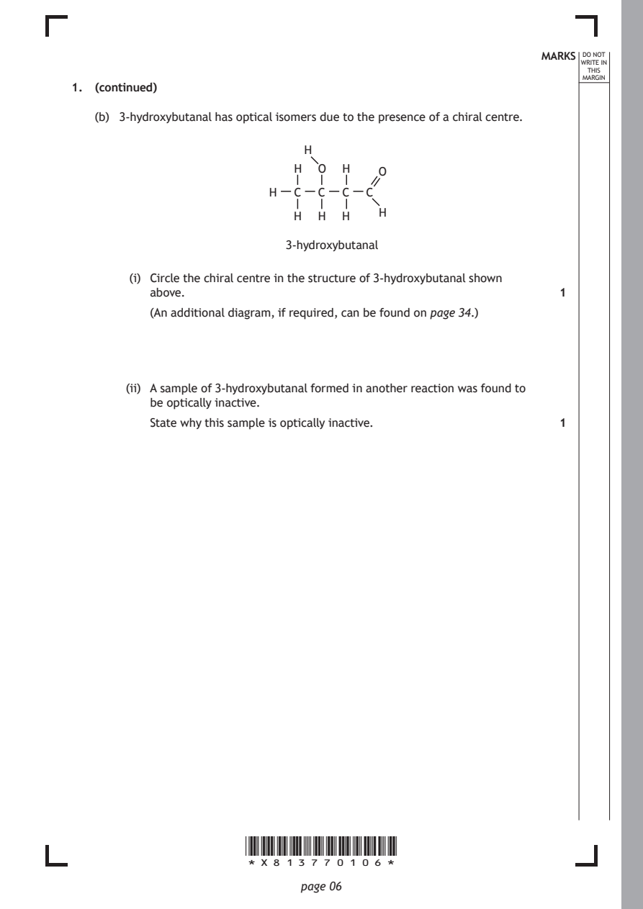
Selectable page text
MARKS _{W}^{D}_{R}^{O}_{I} _{T}^{N}OT
E IN
THIS
MARGIN
1. (continued)
(b) 3-hydroxybutanal has optical isomers due to the presence of a chiral centre.
H
H O H O
H C C C C
H
H H H
3-hydroxybutanal
(i) Circle the chiral centre in the structure of 3-hydroxybutanal shown
above. 1
(An additional diagram, if required, can be found on page 34.)
(ii) A sample of 3-hydroxybutanal formed in another reaction was found to
be optically inactive.
State why this sample is optically inactive. 1
*X813770106*
page 06PDF page 7
Paper 2, Question 2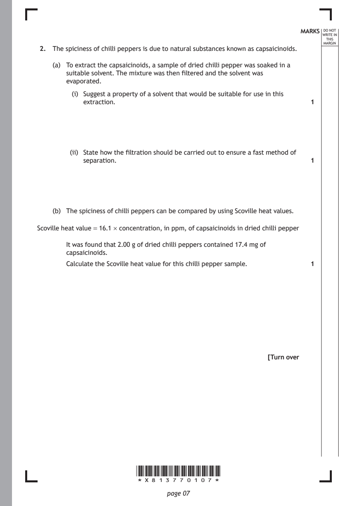
Selectable page text
MARKS _{W}^{D}_{R}^{O}_{I} _{T}^{N}OT
E IN
THIS
MARGIN
2. The spiciness of chilli peppers is due to natural substances known as capsaicinoids.
(a) To extract the capsaicinoids, a sample of dried chilli pepper was soaked in a
suitable solvent. The mixture was then filtered and the solvent was
evaporated.
(i) Suggest a property of a solvent that would be suitable for use in this
extraction. 1
(ii) State how the filtration should be carried out to ensure a fast method of
separation. 1
(b) The spiciness of chilli peppers can be compared by using Scoville heat values.
Scoville heat value = 16.1 × concentration, in ppm, of capsaicinoids in dried chilli pepper
It was found that 2.00 g of dried chilli peppers contained 17.4 mg of
capsaicinoids.
Calculate the Scoville heat value for this chilli pepper sample. 1
[Turn over
*X813770107*
page 07PDF page 8
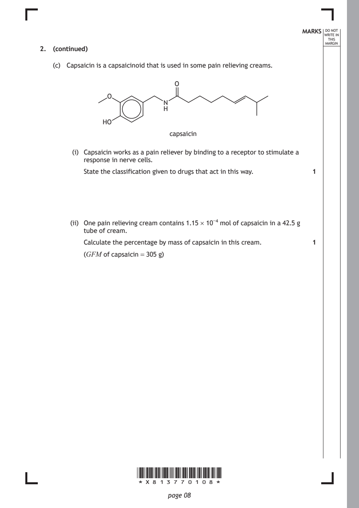
Selectable page text
MARKS _{W}^{D}_{R}^{O}_{I} _{T}^{N}OT
E IN
THIS
MARGIN
2. (continued)
(c) Capsaicin is a capsaicinoid that is used in some pain relieving creams.
O
O
N
H
HO
capsaicin
(i) Capsaicin works as a pain reliever by binding to a receptor to stimulate a
response in nerve cells.
State the classification given to drugs that act in this way. 1
(ii) One pain relieving cream contains 1.15 × 10⁻⁴ mol of capsaicin in a 42.5 g
tube of cream.
Calculate the percentage by mass of capsaicin in this cream. 1
(GFM of capsaicin = 305 g)
*X813770108*
page 08PDF page 9
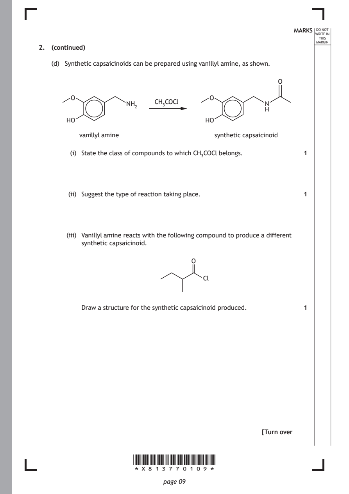
Selectable page text
MARKS _{W}^{D}_{R}^{O}_{I} _{T}^{N}OT
E IN
THIS
MARGIN
2. (continued)
(d) Synthetic capsaicinoids can be prepared using vanillyl amine, as shown.
O
O O
CH₃COCl
NH₂ N
H
HO HO
vanillyl amine synthetic capsaicinoid
(i) State the class of compounds to which CH₃COCl belongs. 1
(ii) Suggest the type of reaction taking place. 1
(iii) Vanillyl amine reacts with the following compound to produce a different
synthetic capsaicinoid.
O
Cl
Draw a structure for the synthetic capsaicinoid produced. 1
[Turn over
*X813770109*
page 09PDF page 10
Paper 2, Question 3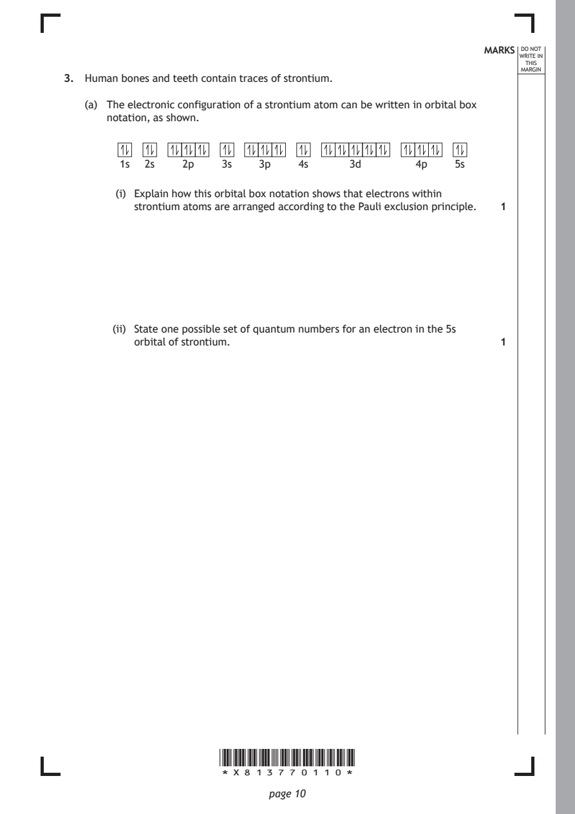
Selectable page text
MARKS _{W}^{D}_{R}^{O}_{I} _{T}^{N}OT
E IN
THIS
MARGIN
3. Human bones and teeth contain traces of strontium.
(a) The electronic configuration of a strontium atom can be written in orbital box
notation, as shown.
1s 2s 2p 3s 3p 4s 3d 4p 5s
(i) Explain how this orbital box notation shows that electrons within
strontium atoms are arranged according to the Pauli exclusion principle. 1
(ii) State one possible set of quantum numbers for an electron in the 5s
orbital of strontium. 1
*X813770110*
page 10PDF page 11
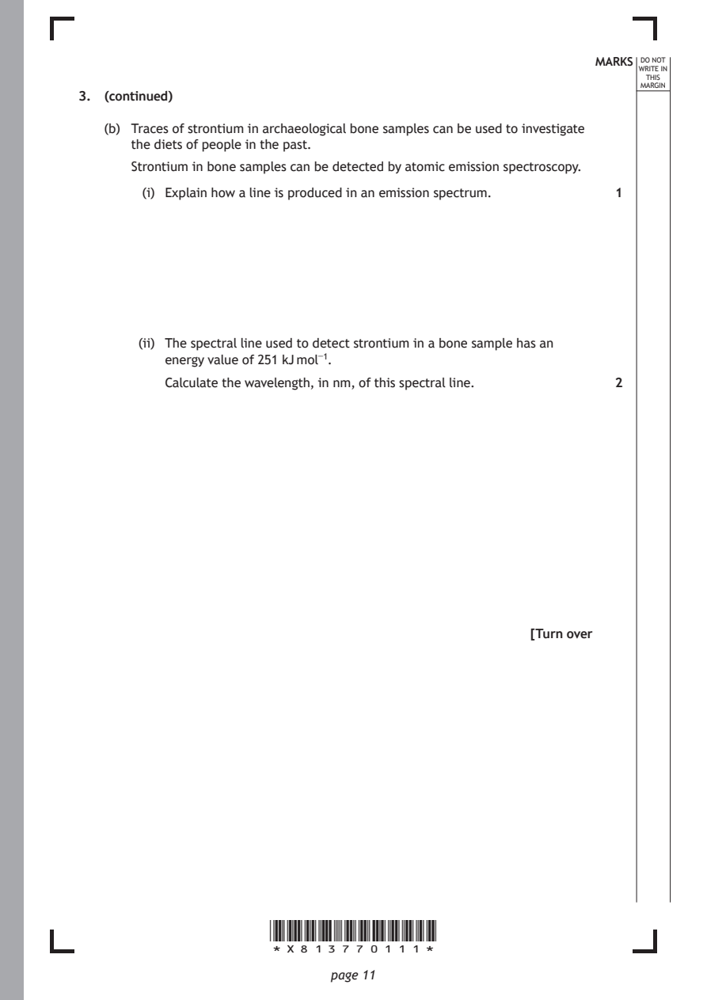
Selectable page text
MARKS _{W}^{D}_{R}^{O}_{I} _{T}^{N}OT
E IN
THIS
MARGIN
3. (continued)
(b) Traces of strontium in archaeological bone samples can be used to investigate
the diets of people in the past.
Strontium in bone samples can be detected by atomic emission spectroscopy.
(i) Explain how a line is produced in an emission spectrum. 1
(ii) The spectral line used to detect strontium in a bone sample has an
energy value of 251 kJ mol⁻¹.
Calculate the wavelength, in nm, of this spectral line. 2
[Turn over
*X813770111*
page 11PDF page 12
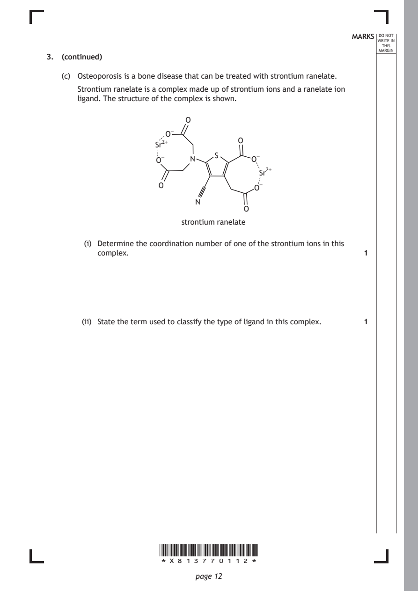
Selectable page text
MARKS _{W}^{D}_{R}^{O}_{I} _{T}^{N}OT
E IN
THIS
MARGIN
3. (continued)
(c) Osteoporosis is a bone disease that can be treated with strontium ranelate.
Strontium ranelate is a complex made up of strontium ions and a ranelate ion
ligand. The structure of the complex is shown.
O
O⁻
O
Sr²⁺
S
O⁻ N O⁻
Sr²⁺
O
O⁻
N
O
strontium ranelate
(i) Determine the coordination number of one of the strontium ions in this
complex. 1
(ii) State the term used to classify the type of ligand in this complex. 1
*X813770112*
page 12PDF page 13
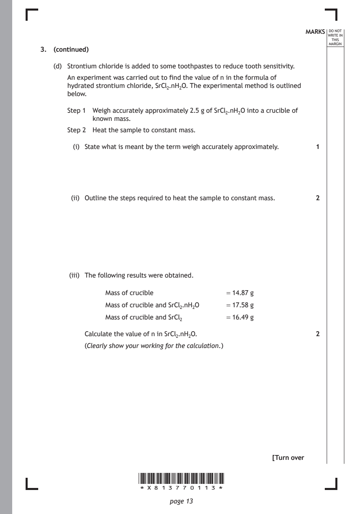
Selectable page text
MARKS _{W}^{D}_{R}^{O}_{I} _{T}^{N}OT
E IN
THIS
MARGIN
3. (continued)
(d) Strontium chloride is added to some toothpastes to reduce tooth sensitivity.
An experiment was carried out to find the value of n in the formula of
hydrated strontium chloride, SrCl₂.nH₂O. The experimental method is outlined
below.
Step 1 Weigh accurately approximately 2.5 g of SrCl₂.nH₂O into a crucible of
known mass.
Step 2 Heat the sample to constant mass.
(i) State what is meant by the term weigh accurately approximately. 1
(ii) Outline the steps required to heat the sample to constant mass. 2
(iii) The following results were obtained.
Mass of crucible = 14.87 g
Mass of crucible and SrCl₂.nH₂O = 17.58 g
Mass of crucible and SrCl₂ = 16.49 g
Calculate the value of n in SrCl₂.nH₂O. 2
(Clearly show your working for the calculation.)
[Turn over
*X813770113*
page 13PDF page 14
Paper 2, Question 4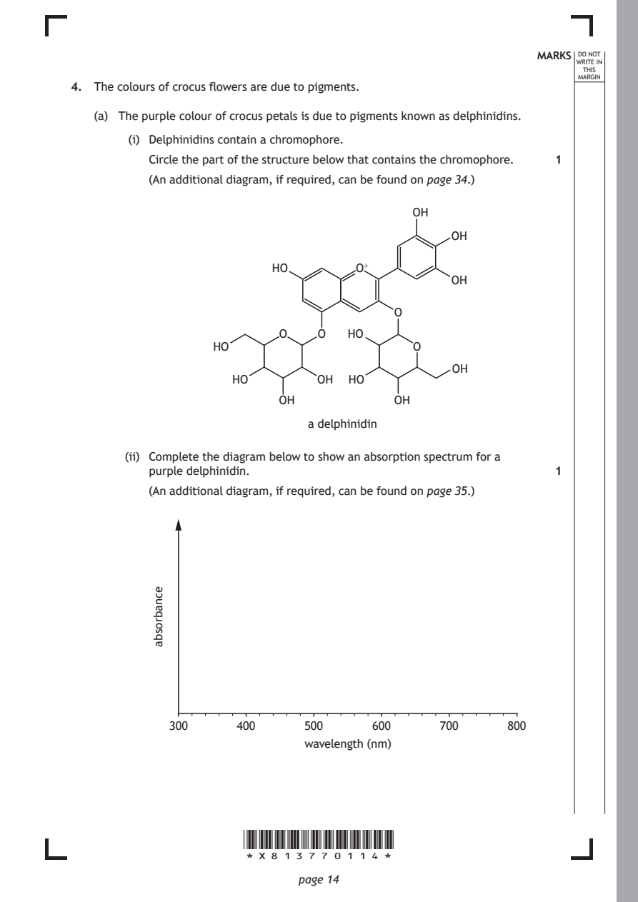
Selectable page text
MARKS _{W}^{D}_{R}^{O}_{I} _{T}^{N}OT
E IN
THIS
MARGIN
4. The colours of crocus flowers are due to pigments.
(a) The purple colour of crocus petals is due to pigments known as delphinidins.
(i) Delphinidins contain a chromophore.
Circle the part of the structure below that contains the chromophore.
(An additional diagram, if required, can be found on page 34.)
OH
OH
HO O⁺
OH
O
O O HO
HO O
OH
HO OH HO
OH OH
a delphinidin
(ii) Complete the diagram below to show an absorption spectrum for a
purple delphinidin.
(An additional diagram, if required, can be found on page 35.)
wavelength (nm)
*X813770114*
page 14
ecnabrosba
1
1
300 400 500 600 700 800PDF page 15
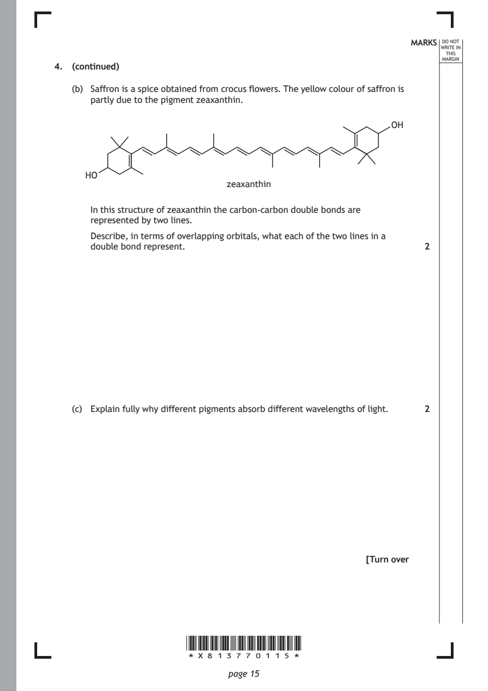
Selectable page text
MARKS _{W}^{D}_{R}^{O}_{I} _{T}^{N}OT
E IN
THIS
MARGIN
4. (continued)
(b) Saffron is a spice obtained from crocus flowers. The yellow colour of saffron is
partly due to the pigment zeaxanthin.
OH
HO
zeaxanthin
In this structure of zeaxanthin the carbon-carbon double bonds are
represented by two lines.
Describe, in terms of overlapping orbitals, what each of the two lines in a
double bond represent. 2
(c) Explain fully why different pigments absorb different wavelengths of light. 2
[Turn over
*X813770115*
page 15PDF page 16
Paper 2, Question 5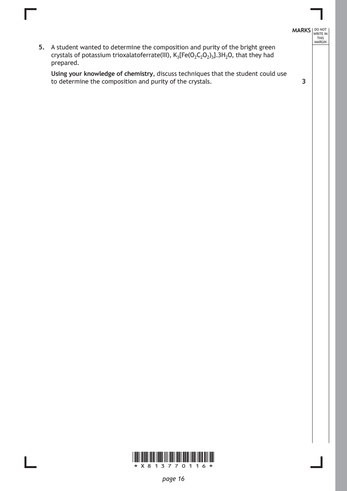
Selectable page text
MARKS _{W}^{D}_{R}^{O}_{I} _{T}^{N}OT
E IN
THIS
MARGIN
5. A student wanted to determine the composition and purity of the bright green
crystals of potassium trioxalatoferrate(III), K₃[Fe(O₂C₂O₂)₃].3H₂O, that they had
prepared.
Using your knowledge of chemistry, discuss techniques that the student could use
to determine the composition and purity of the crystals. 3
*X813770116*
page 16PDF page 17
Paper 2, Question 6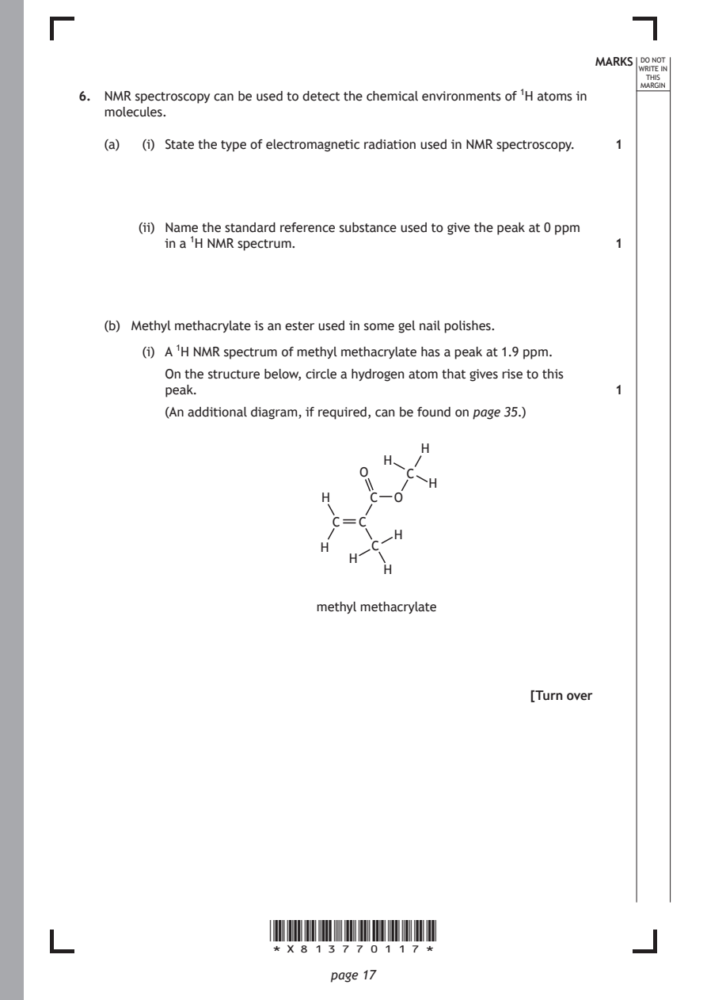
Selectable page text
MARKS _{W}^{D}_{R}^{O}_{I} _{T}^{N}OT
E IN
THIS
MARGIN
6. NMR spectroscopy can be used to detect the chemical environments of ¹H atoms in
molecules.
(a) (i) State the type of electromagnetic radiation used in NMR spectroscopy. 1
(ii) Name the standard reference substance used to give the peak at 0 ppm
in a ¹H NMR spectrum. 1
(b) Methyl methacrylate is an ester used in some gel nail polishes.
(i) A ¹H NMR spectrum of methyl methacrylate has a peak at 1.9 ppm.
On the structure below, circle a hydrogen atom that gives rise to this
peak. 1
(An additional diagram, if required, can be found on page 35.)
H
H
O C
H
H C O
C C
H
H C
H
H
methyl methacrylate
[Turn over
*X813770117*
page 17PDF page 18
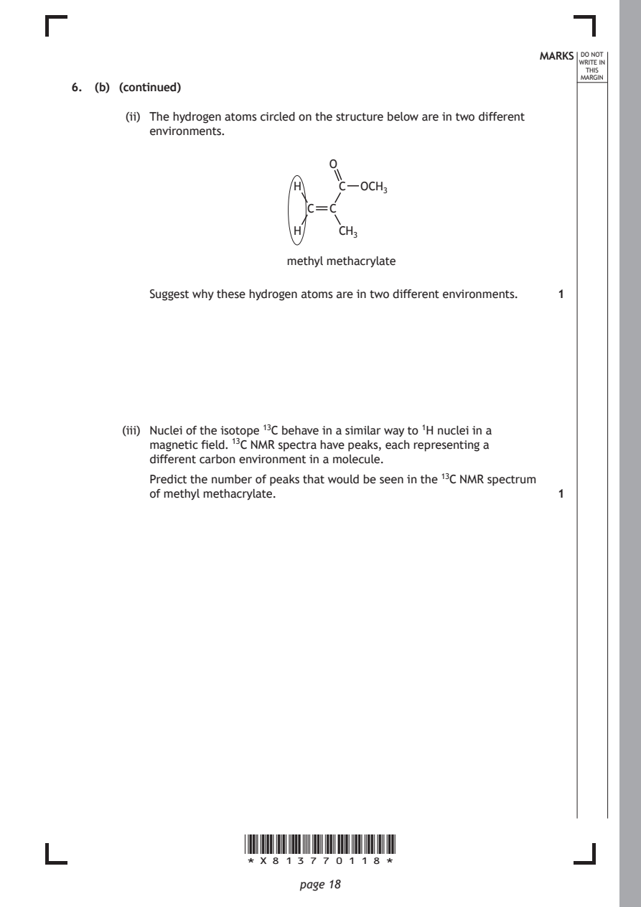
Selectable page text
MARKS _{W}^{D}_{R}^{O}_{I} _{T}^{N}OT
E IN
THIS
MARGIN
6. (b) (continued)
(ii) The hydrogen atoms circled on the structure below are in two different
environments.
O
H C OCH₃
C C
H CH₃
methyl methacrylate
Suggest why these hydrogen atoms are in two different environments. 1
(iii) Nuclei of the isotope ¹³C behave in a similar way to ¹H nuclei in a
magnetic field. ¹³C NMR spectra have peaks, each representing a
different carbon environment in a molecule.
Predict the number of peaks that would be seen in the ¹³C NMR spectrum
of methyl methacrylate. 1
*X813770118*
page 18PDF page 19
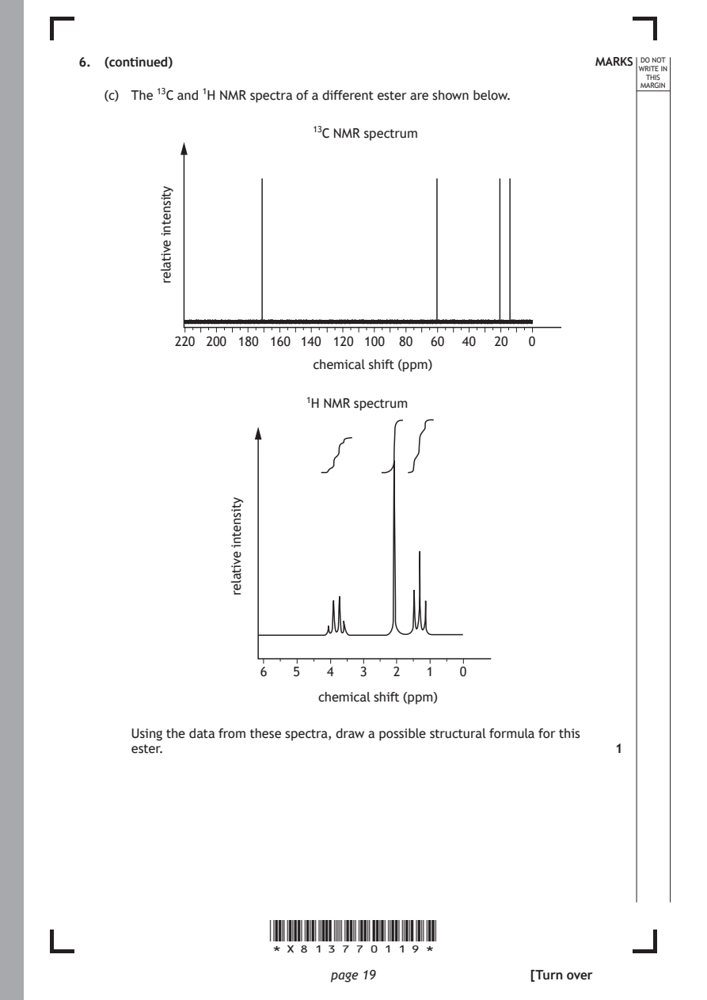
Selectable page text
6. (continued) MARKS _{W}^{D}_{R}^{O}_{I} _{T}^{N}OT
E IN
THIS
MARGIN
(c) The ¹³C and ¹H NMR spectra of a different ester are shown below.
13C NMR spectrum
220 200 180 160 140 120 100 80 60 40 20 0
chemical shift (ppm)
*X813770119*
page 19
ytisnetni
evitaler
1H NMR spectrum
6 5 4 3 2 1 0
chemical shift (ppm)
ytisnetni
evitaler
Using the data from these spectra, draw a possible structural formula for this
ester. 1
[Turn overPDF page 20
Paper 2, Question 7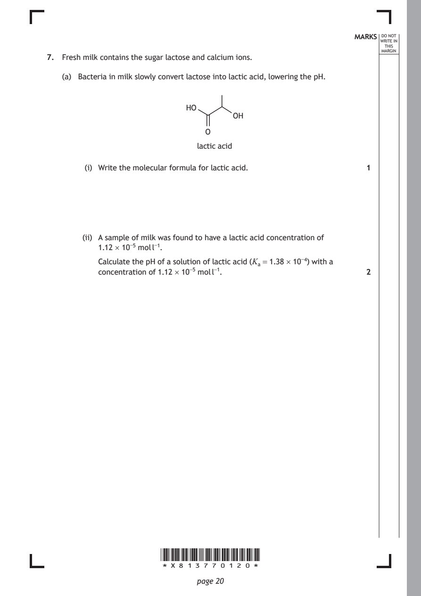
Selectable page text
MARKS _{W}^{D}_{R}^{O}_{I} _{T}^{N}OT
E IN
THIS
MARGIN
7. Fresh milk contains the sugar lactose and calcium ions.
(a) Bacteria in milk slowly convert lactose into lactic acid, lowering the pH.
HO
OH
O
lactic acid
(i) Write the molecular formula for lactic acid. 1
(ii) A sample of milk was found to have a lactic acid concentration of
1.12 × 10⁻⁵ mol l⁻¹.
Calculate the pH of a solution of lactic acid (Kₐ = 1.38 × 10⁻⁴) with a
concentration of 1.12 × 10⁻⁵ mol l⁻¹. 2
*X813770120*
page 20PDF page 21
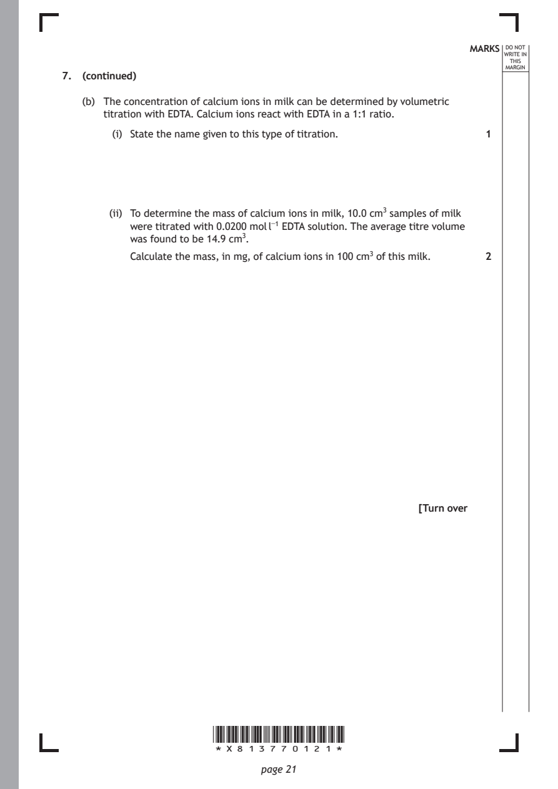
Selectable page text
MARKS _{W}^{D}_{R}^{O}_{I} _{T}^{N}OT
E IN
THIS
MARGIN
7. (continued)
(b) The concentration of calcium ions in milk can be determined by volumetric
titration with EDTA. Calcium ions react with EDTA in a 1:1 ratio.
(i) State the name given to this type of titration. 1
(ii) To determine the mass of calcium ions in milk, 10.0 cm³ samples of milk
were titrated with 0.0200 mol l⁻¹ EDTA solution. The average titre volume
was found to be 14.9 cm³.
Calculate the mass, in mg, of calcium ions in 100 cm³ of this milk. 2
[Turn over
*X813770121*
page 21PDF page 22
Paper 2, Question 8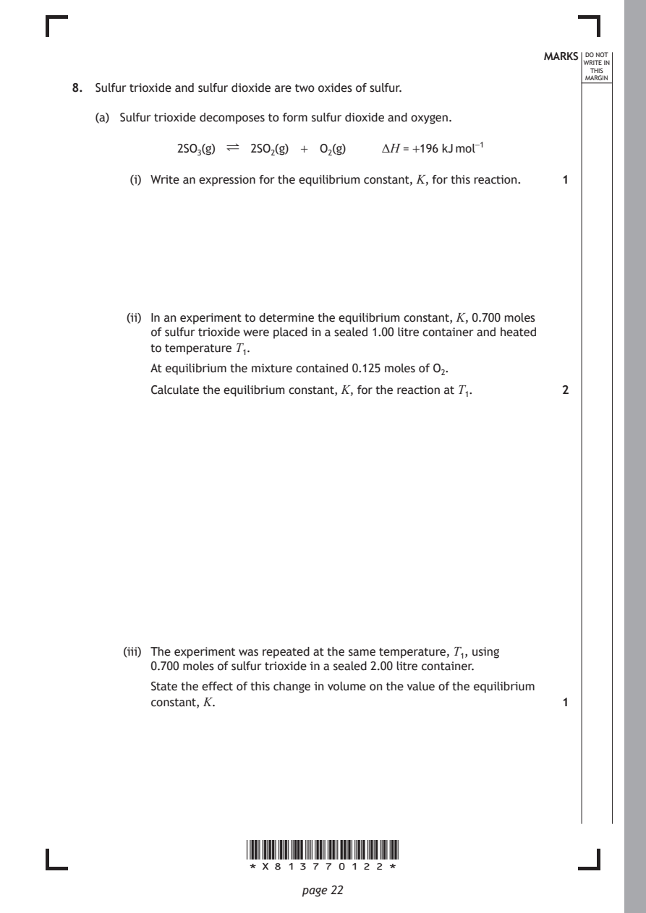
Selectable page text
MARKS _{W}^{D}_{R}^{O}_{I} _{T}^{N}OT
E IN
THIS
MARGIN
8. Sulfur trioxide and sulfur dioxide are two oxides of sulfur.
(a) Sulfur trioxide decomposes to form sulfur dioxide and oxygen.
2SO₃(g) ∏ 2SO₂(g) + O₂(g) ΔH = +196 kJ mol⁻¹
(i) Write an expression for the equilibrium constant, K, for this reaction. 1
(ii) In an experiment to determine the equilibrium constant, K, 0.700 moles
of sulfur trioxide were placed in a sealed 1.00 litre container and heated
to temperature T₁.
At equilibrium the mixture contained 0.125 moles of O₂.
Calculate the equilibrium constant, K, for the reaction at T₁. 2
(iii) The experiment was repeated at the same temperature, T₁, using
0.700 moles of sulfur trioxide in a sealed 2.00 litre container.
State the effect of this change in volume on the value of the equilibrium
constant, K. 1
*X813770122*
page 22PDF page 23
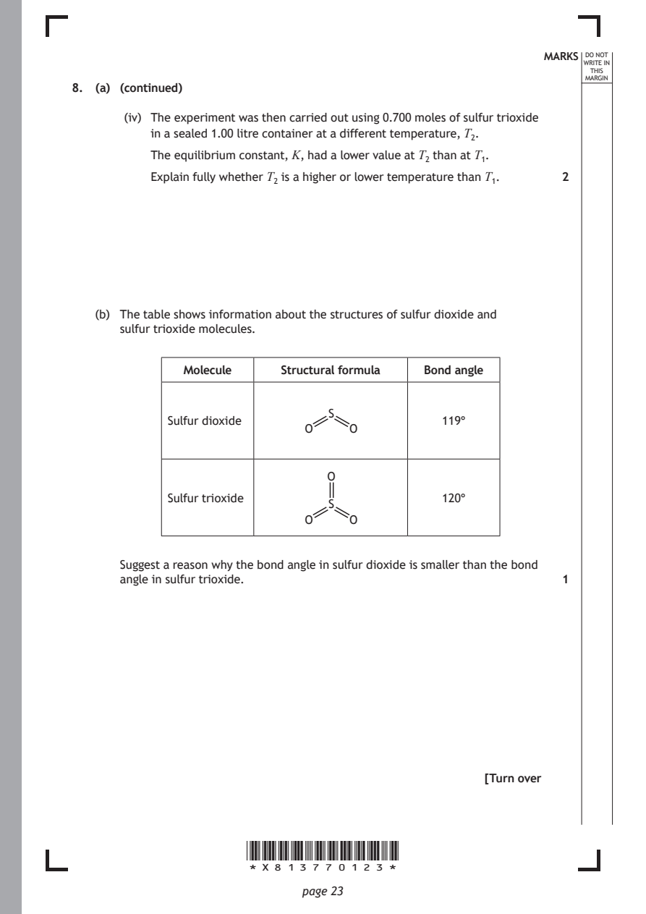
Selectable page text
MARKS _{W}^{D}_{R}^{O}_{I} _{T}^{N}OT
E IN
THIS
MARGIN
8. (a) (continued)
(iv) The experiment was then carried out using 0.700 moles of sulfur trioxide
in a sealed 1.00 litre container at a different temperature, T₂.
The equilibrium constant, K, had a lower value at T₂ than at T₁.
Explain fully whether T₂ is a higher or lower temperature than T₁. 2
(b) The table shows information about the structures of sulfur dioxide and
sulfur trioxide molecules.
Molecule Structural formula Bond angle
S
Sulfur dioxide 119°
O O
O
Sulfur trioxide 120°
S
O O
Suggest a reason why the bond angle in sulfur dioxide is smaller than the bond
angle in sulfur trioxide. 1
[Turn over
*X813770123*
page 23PDF page 24
Paper 2, Question 9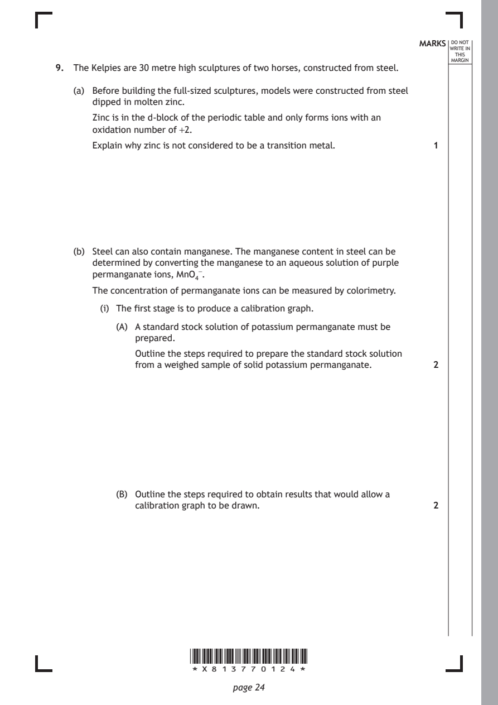
Selectable page text
MARKS _{W}^{D}_{R}^{O}_{I} _{T}^{N}OT
E IN
THIS
MARGIN
9. The Kelpies are 30 metre high sculptures of two horses, constructed from steel.
(a) Before building the full-sized sculptures, models were constructed from steel
dipped in molten zinc.
Zinc is in the d-block of the periodic table and only forms ions with an
oxidation number of +2.
Explain why zinc is not considered to be a transition metal. 1
(b) Steel can also contain manganese. The manganese content in steel can be
determined by converting the manganese to an aqueous solution of purple
permanganate ions, MnO₄⁻.
The concentration of permanganate ions can be measured by colorimetry.
(i) The first stage is to produce a calibration graph.
(A) A standard stock solution of potassium permanganate must be
prepared.
Outline the steps required to prepare the standard stock solution
from a weighed sample of solid potassium permanganate. 2
(B) Outline the steps required to obtain results that would allow a
calibration graph to be drawn. 2
*X813770124*
page 24PDF page 25
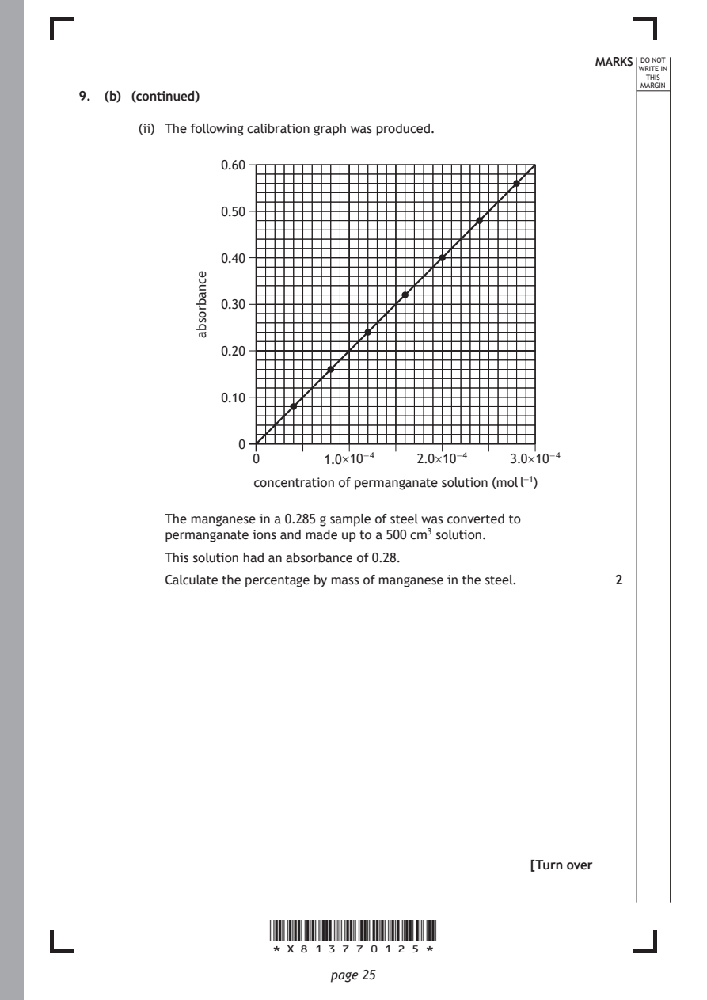
Selectable page text
MARKS _{W}^{D}_{R}^{O}_{I} _{T}^{N}OT
E IN
THIS
MARGIN
9. (b) (continued)
(ii) The following calibration graph was produced.
0.60
0.50
0.40
0.30
0.20
0.10
0
0 1.0×10⁻⁴ 2.0×10⁻⁴ 3.0×10⁻⁴
concentration of permanganate solution (mol l⁻¹)
*X813770125*
page 25
ecnabrosba
The manganese in a 0.285 g sample of steel was converted to
permanganate ions and made up to a 500 cm³ solution.
This solution had an absorbance of 0.28.
Calculate the percentage by mass of manganese in the steel. 2
[Turn overPDF page 26
Paper 2, Question 10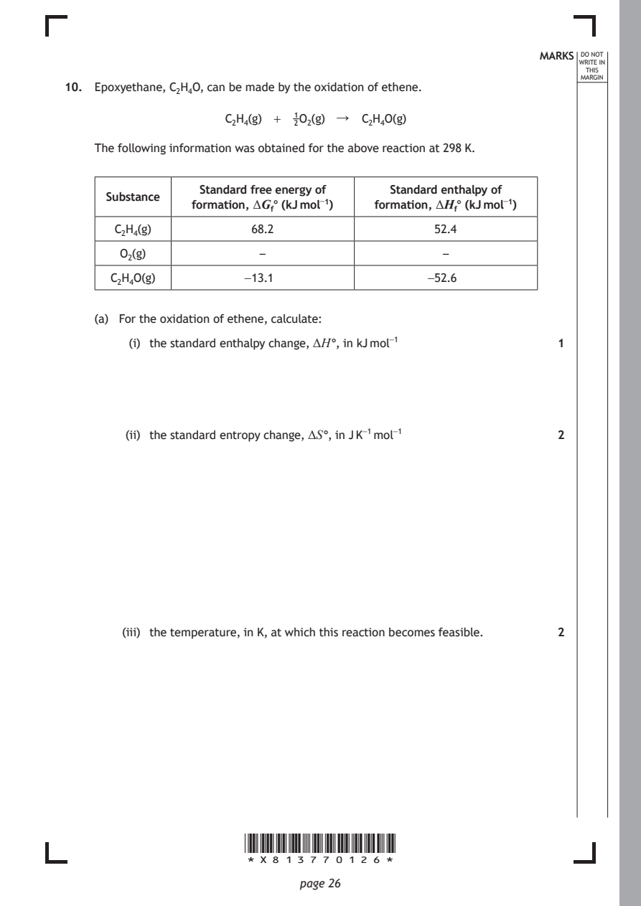
Selectable page text
MARKS _{W}^{D}_{R}^{O}_{I} _{T}^{N}OT
E IN
THIS
MARGIN
10. Epoxyethane, C₂H₄O, can be made by the oxidation of ethene.
C₂H₄(g) + 1O₂(g) ↓ C₂H₄O(g)
2
The following information was obtained for the above reaction at 298 K.
Standard free energy of Standard enthalpy of
Substance
formation, ΔG_{f}° (kJ mol⁻¹) formation, ΔH_{f}° (kJ mol⁻¹)
C₂H₄(g) 68.2 52.4
O₂(g) – –
C₂H₄O(g) −13.1 −52.6
(a) For the oxidation of ethene, calculate:
(i) the standard enthalpy change, ΔH °, in kJ mol⁻¹ 1
(ii) the standard entropy change, ΔS °, in J K⁻¹ mol⁻¹ 2
(iii) the temperature, in K, at which this reaction becomes feasible. 2
*X813770126*
page 26PDF page 27
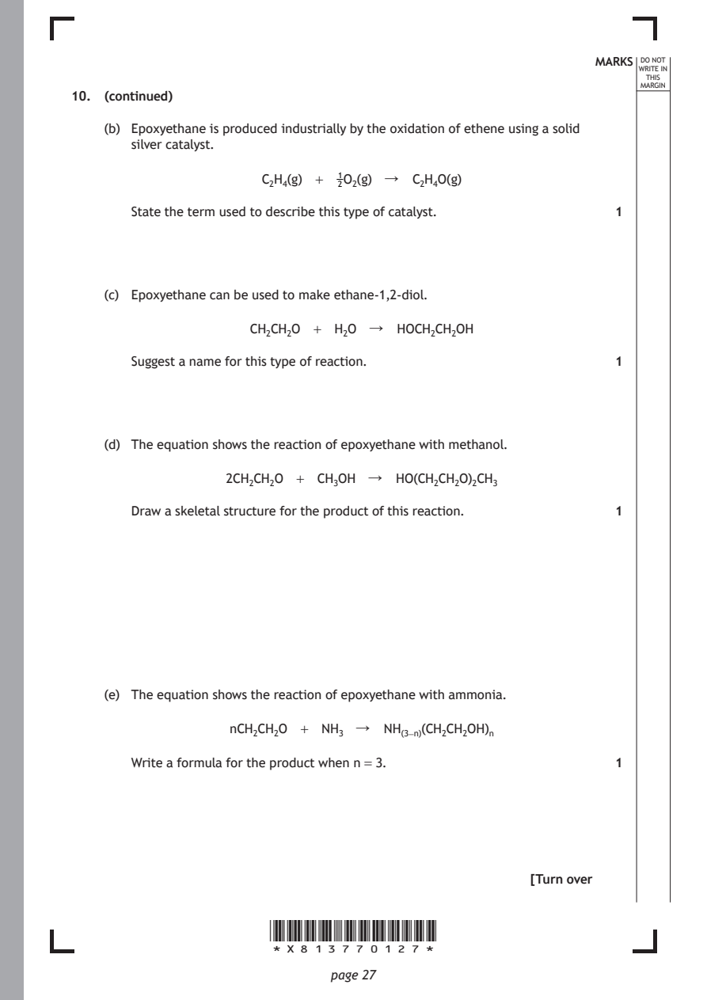
Selectable page text
MARKS _{W}^{D}_{R}^{O}_{I} _{T}^{N}OT
E IN
THIS
MARGIN
10. (continued)
(b) Epoxyethane is produced industrially by the oxidation of ethene using a solid
silver catalyst.
C₂H₄(g) + 1O₂(g) ↓ C₂H₄O(g)
2
State the term used to describe this type of catalyst. 1
(c) Epoxyethane can be used to make ethane-1,2-diol.
CH₂CH₂O + H₂O ↓ HOCH₂CH₂OH
Suggest a name for this type of reaction. 1
(d) The equation shows the reaction of epoxyethane with methanol.
2CH₂CH₂O + CH₃OH ↓ HO(CH₂CH₂O)₂CH₃
Draw a skeletal structure for the product of this reaction. 1
(e) The equation shows the reaction of epoxyethane with ammonia.
nCH₂CH₂O + NH₃ ↓ NH₍₃₋ₙ₎(CH₂CH₂OH)ₙ
Write a formula for the product when n = 3. 1
[Turn over
*X813770127*
page 27PDF page 28
Paper 2, Question 11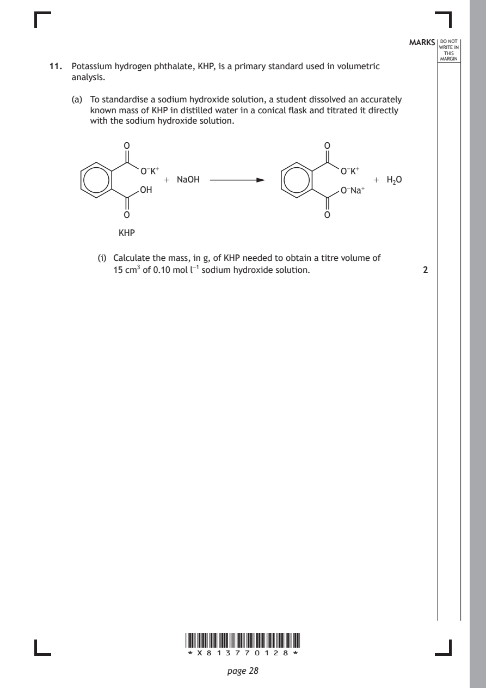
Selectable page text
MARKS _{W}^{D}_{R}^{O}_{I} _{T}^{N}OT
E IN
THIS
MARGIN
11. Potassium hydrogen phthalate, KHP, is a primary standard used in volumetric
analysis.
(a) To standardise a sodium hydroxide solution, a student dissolved an accurately
known mass of KHP in distilled water in a conical flask and titrated it directly
with the sodium hydroxide solution.
O O
O⁻K⁺ O⁻K⁺
+ NaOH + H₂O
OH O⁻Na⁺
O O
KHP
(i) Calculate the mass, in g, of KHP needed to obtain a titre volume of
15 cm³ of 0.10 mol l⁻¹ sodium hydroxide solution. 2
*X813770128*
page 28PDF page 29
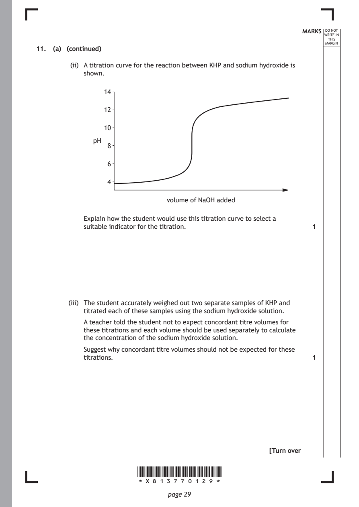
Selectable page text
MARKS _{W}^{D}_{R}^{O}_{I} _{T}^{N}OT
E IN
THIS
MARGIN
11. (a) (continued)
(ii) A titration curve for the reaction between KHP and sodium hydroxide is
shown.
14
12
10
pH
8
6
4
volume of NaOH added
Explain how the student would use this titration curve to select a
suitable indicator for the titration. 1
(iii) The student accurately weighed out two separate samples of KHP and
titrated each of these samples using the sodium hydroxide solution.
A teacher told the student not to expect concordant titre volumes for
these titrations and each volume should be used separately to calculate
the concentration of the sodium hydroxide solution.
Suggest why concordant titre volumes should not be expected for these
titrations. 1
[Turn over
*X813770129*
page 29PDF page 30
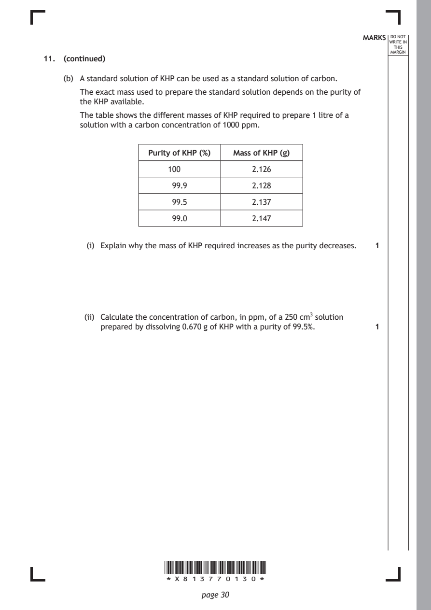
Selectable page text
MARKS _{W}^{D}_{R}^{O}_{I} _{T}^{N}OT
E IN
THIS
MARGIN
11. (continued)
(b) A standard solution of KHP can be used as a standard solution of carbon.
The exact mass used to prepare the standard solution depends on the purity of
the KHP available.
The table shows the different masses of KHP required to prepare 1 litre of a
solution with a carbon concentration of 1000 ppm.
Purity of KHP (%) Mass of KHP (g)
100 2.126
99.9 2.128
99.5 2.137
99.0 2.147
(i) Explain why the mass of KHP required increases as the purity decreases. 1
(ii) Calculate the concentration of carbon, in ppm, of a 250 cm³ solution
prepared by dissolving 0.670 g of KHP with a purity of 99.5%. 1
*X813770130*
page 30PDF page 31
Paper 2, Question 12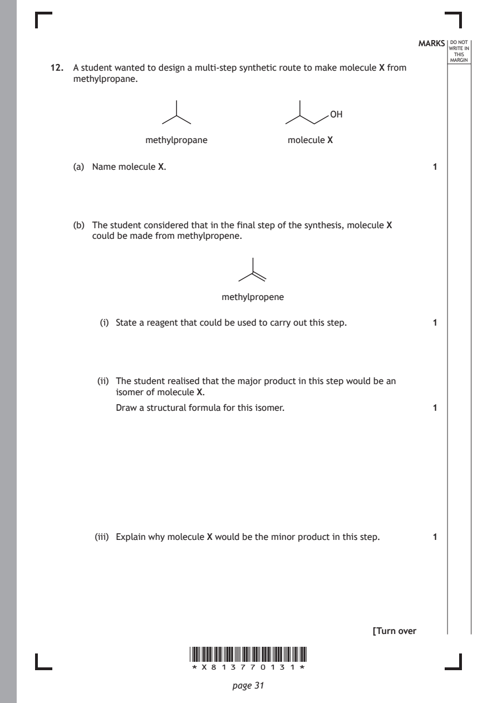
Selectable page text
MARKS _{W}^{D}_{R}^{O}_{I} _{T}^{N}OT
E IN
THIS
MARGIN
12. A student wanted to design a multi-step synthetic route to make molecule X from
methylpropane.
OH
methylpropane molecule X
(a) Name molecule X. 1
(b) The student considered that in the final step of the synthesis, molecule X
could be made from methylpropene.
methylpropene
(i) State a reagent that could be used to carry out this step. 1
(ii) The student realised that the major product in this step would be an
isomer of molecule X.
Draw a structural formula for this isomer. 1
(iii) Explain why molecule X would be the minor product in this step. 1
[Turn over
*X813770131*
page 31PDF page 32
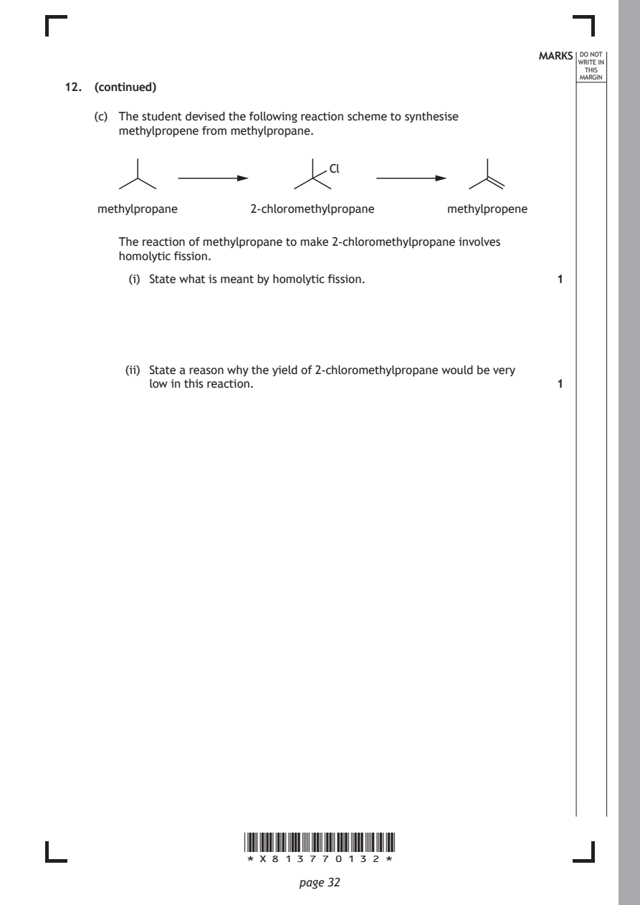
Selectable page text
MARKS _{W}^{D}_{R}^{O}_{I} _{T}^{N}OT
E IN
THIS
MARGIN
12. (continued)
(c) The student devised the following reaction scheme to synthesise
methylpropene from methylpropane.
Cl
methylpropane 2-chloromethylpropane methylpropene
The reaction of methylpropane to make 2-chloromethylpropane involves
homolytic fission.
(i) State what is meant by homolytic fission. 1
(ii) State a reason why the yield of 2-chloromethylpropane would be very
low in this reaction. 1
*X813770132*
page 32PDF page 33
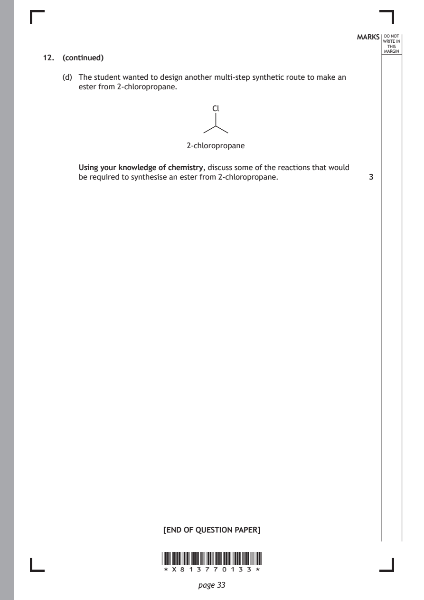
Selectable page text
MARKS _{W}^{D}_{R}^{O}_{I} _{T}^{N}OT
E IN
THIS
MARGIN
12. (continued)
(d) The student wanted to design another multi-step synthetic route to make an
ester from 2-chloropropane.
Cl
2-chloropropane
Using your knowledge of chemistry, discuss some of the reactions that would
be required to synthesise an ester from 2-chloropropane. 3
[END OF QUESTION PAPER]
*X813770133*
page 33PDF page 34
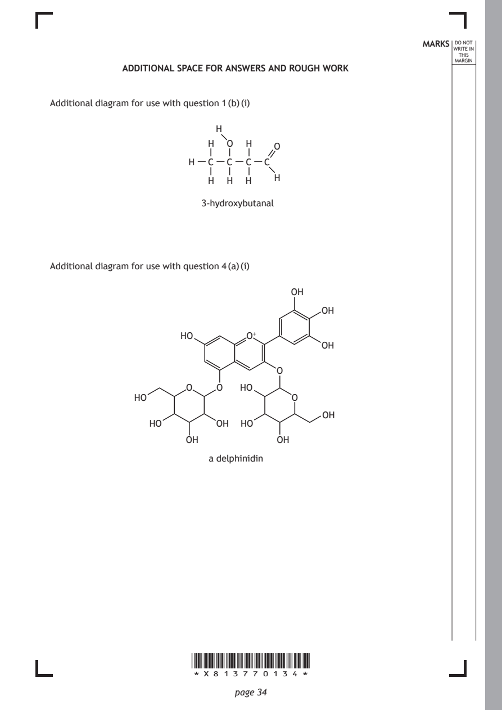
Selectable page text
MARKS _{W}^{D}_{R}^{O}_{I} _{T}^{N}OT
E IN
THIS
MARGIN
ADDITIONAL SPACE FOR ANSWERS AND ROUGH WORK
Additional diagram for use with question 1 (b) (i)
H
H O H O
H C C C C
H
H H H
3-hydroxybutanal
Additional diagram for use with question 4 (a) (i)
OH
OH
HO O⁺
OH
O
O O HO
HO O
OH
HO OH HO
OH OH
a delphinidin
*X813770134*
page 34PDF page 35
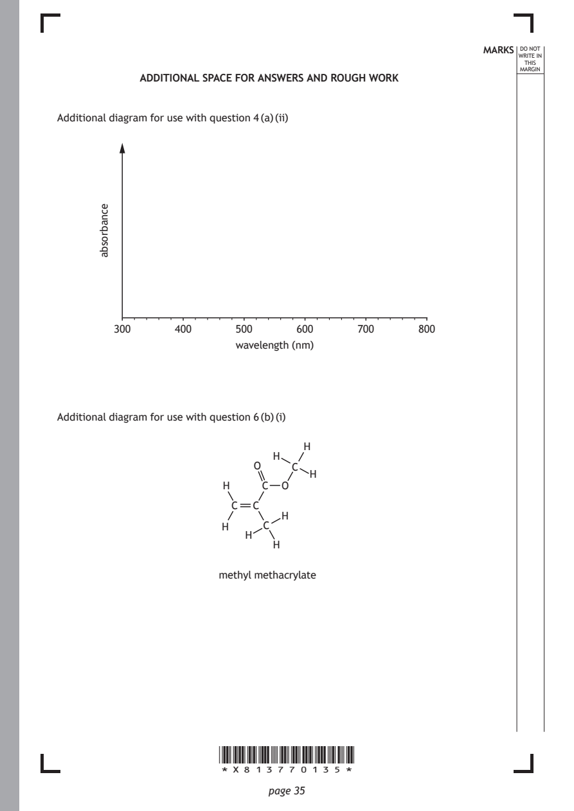
Selectable page text
MARKS _{W}^{D}_{R}^{O}_{I} _{T}^{N}OT
E IN
THIS
MARGIN
ADDITIONAL SPACE FOR ANSWERS AND ROUGH WORK
Additional diagram for use with question 4 (a) (ii)
wavelength (nm)
*X813770135*
page 35
ecnabrosba
300 400 500 600 700 800
Additional diagram for use with question 6 (b) (i)
H
H
O C
H
H C O
C C
H
H C
H
H
methyl methacrylatePDF page 36
Selectable page text
MARKS _{W}^{D}_{R}^{O}_{I} _{T}^{N}OT
E IN
THIS
MARGIN
ADDITIONAL SPACE FOR ANSWERS AND ROUGH WORK
*X813770136*
page 36PDF page 37

Selectable page text
MARKS _{W}^{D}_{R}^{O}_{I} _{T}^{N}OT
E IN
THIS
MARGIN
ADDITIONAL SPACE FOR ANSWERS AND ROUGH WORK
*X813770137*
page 37PDF page 38
Selectable page text
[BLANK PAGE]
DO NOT WRITE ON THIS PAGE
*X813770138*
page 38PDF page 39

Selectable page text
[BLANK PAGE]
DO NOT WRITE ON THIS PAGE
*X813770139*
page 39PDF page 40
Selectable page text
[BLANK PAGE]
DO NOT WRITE ON THIS PAGE
*X813770140*
page 40